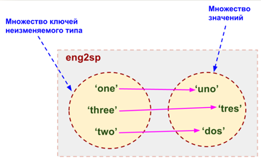
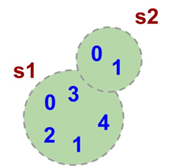

Словари
Обычные списки (массивы) представляют собой набор пронумерованных элементов, то есть для обращения к какому-либо элементу списка необходимо указать его номер. Номер элемента в списке однозначно идентифицирует сам элемент. Но идентифицировать данные по числовым номерам не всегда оказывается удобно. Например, маршруты поездов идентифицируются численно-буквенным кодом (число и одна буква), также численно-буквенным кодом идентифицируются авиарейсы, то есть для хранения информации о рейсах поездов или самолетов в качестве идентификатора удобно было бы использовать не число, а текстовую строку.
Структура данных, позволяющая идентифицировать ее элементы не по числовому индексу, а по произвольному, называется словарем или ассоциативным массивом. Соответствующая структура данных в языке Python называется dict.
Рассмотрим простой пример использования словаря. Заведем словарь Capitals, где индексом является название страны, а значением — название столицы этой страны. Это позволит легко определять по строке с названием страны ее столицу.
# Создадим пустой словать Capitals
Capitals = dict()
# Заполним его несколькими значениями
Capitals['Russia'] = 'Moscow'
Capitals['Ukraine'] = 'Kiev'
Capitals['USA'] = 'Washington'
Countries = ['Russia', 'France', 'USA', 'Russia']
for country in Countries:
# Для каждой страны из списка проверим, есть ли она в словаре Capitals
if country in Capitals:
print('Столица страны ' + country + ': ' + Capitals[country])
else:
print('В базе нет страны c названием ' + country)
Итак, каждый элемент словаря состоит из двух объектов: ключа и значения. В нашем примере ключом является название страны, значением является название столицы. Ключ идентифицирует элемент словаря, значение является данными, которые соответствуют данному ключу. Значения ключей — уникальны, двух одинаковых ключей в словаре быть не может.
В жизни широко распространены словари, например, привычные бумажные словари (толковые, орфографические, лингвистические). В них ключом является слово-заголовок статьи, а значением — сама статья. Для того, чтобы получить доступ к статье, необходимо указать слово-ключ.
Другой пример словаря, как структуры данных — телефонный справочник. В нем ключом является имя, а значением — номер телефона. И словарь, и телефонный справочник хранятся так, что легко найти элемент словаря по известному ключу (например, если записи хранятся в алфавитном порядке ключей, то легко можно найти известный ключ, например, бинарным поиском), но если ключ неизвестен, а известно лишь значение, то поиск элемента с данным значением может потребовать последовательного просмотра всех элементов словаря.
Особенностью ассоциативного массива является его динамичность: в него можно добавлять новые элементы с произвольными ключами и удалять уже существующие элементы. При этом размер используемой памяти пропорционален размеру ассоциативного массива. Доступ к элементам ассоциативного массива выполняется хоть и медленнее, чем к обычным массивам, но в целом довольно быстро.
В языке Python ключом может быть произвольный неизменяемый тип данных: целые и действительные числа, строки, кортежи. Ключом в словаре не может быть множество, но может быть элемент типа frozenset: специальный тип данных, являющийся аналогом типа set, который нельзя изменять после создания. Значением элемента словаря может быть любой тип данных, в том числе и изменяемый.

|
>>> eng2sp = dict() |
# создаем пустой словарь |
|
>>> eng2sp['one'] = 'uno' # добавляем 'uno' для элемента с индексом 'one' |
|
|
|
|
>>> eng2sp
{'one':
'uno'}
>>>
eng2sp['one']
'uno'
>>>
eng2sp['two'] = 'dos'
|
>>> eng2sp['three'] = 'tres' |
|
{'three': 'tres', 'one': 'uno', 'two': 'dos'}
>>>
Когда нужно использовать словари
Словари нужно использовать в следующих случаях:
− Подсчет числа каких-то объектов. В этом случае нужно завести словарь, в котором ключами являются объекты, а значениями — их количество.
− Хранение каких-либо данных, связанных с объектом. Ключи — объекты, значения — связанные с ними данные. Например, если нужно по названию месяца определить его порядковый номер, то это можно сделать при помощи словаря Num['January'] = 1; Num['February'] = 2; ....
− Установка соответствия между объектами (например, “родитель—потомок”). Ключ — объект, значение — соответствующий ему объект.
− Если нужен обычный массив, но максимальное значение индекса элемента очень велико, и при этом будут использоваться не все возможные индексы (так называемый “разреженный массив”), то можно использовать ассоциативный массив для экономии памяти.
Создание словаря
Пустой словарь можно создать при помощи функции dict() или пустой пары фигурных скобок {} (вот почему фигурные скобки нельзя использовать для создания пустого множества). Для создания словаря с некоторым набором начальных значений можно использовать следующие конструкции:
Capitals = {'Russia': 'Moscow', 'Ukraine': 'Kiev', 'USA': 'Washington'}
Capitals = dict(Russia = 'Moscow', Ukraine = 'Kiev', USA = 'Washington')
Capitals = dict([("Russia", "Moscow"), ("Ukraine", "Kiev"), ("USA", "Washington")])
Capitals = dict(zip(["Russia", "Ukraine", "USA"], ["Moscow", "Kiev", "Washington"]))
print(Capitals)
Первые два способа можно использовать только для создания небольших словарей, перечисляя все их элементы. Кроме того, во втором способе ключи передаются как именованные параметры функции dict, поэтому в этом случае ключи могут быть только строками, причем являющимися корректными идентификаторами. В третьем и четвертом случае можно создавать большие словари, если в качестве аргументов передавать уже готовые списки, которые могут быть получены не обязательно перечислением всех элементов, а любым другим способом построены по ходу исполнения программы. В третьем способе функции dict нужно передать список, каждый элемент которого является кортежем из двух элементов: ключа и значения. В четвертом способе используется функция zip, которой передаются два списка одинаковой длины: список ключей и список значений.
Также можно использовать генерацию словаря через Dict comprehensions:
Cities = ["Moscow", "Kiev", "Washington"]
States = ["Russia", "Ukraine", "USA"]
CapitalsOfState = {state: city for city, state in zip(Cities, States)}
Это особенно полезно, когда нужно "вывернуть" словарь наизнанку:
StateByCapital = {CapitalsOfState[state]: state for state in CapitalsOfState}
По аналогии с множествами, словари являются неупорядоченной коллекцией!
Часто словари используются, если требуется найти частоту встречаемости элементов в последовательности (списке, строке, кортеже ). Функция, которая возвращает словарь, содержащий статистику встречаемости элементов в последовательности:
def histogram(s):
d = dict()
for c in s:
if c not in d:
d[c] = 1
else:
d[c] = d[c] + 1 # или d[c] += 1
return d
Результат вызова функции histogram для списка, строки, кортежа соответственно:
>>> histogram([2, 5, 6, 5, 4, 4, 4, 4, 3, 2, 2, 2, 2])
{2: 5, 3:
1, 4: 4, 5: 2, 6: 1}
>>> histogram("ywte3475eryt3478e477477474")
{'4': 6, '8': 1, 'e': 3, '3': 2, '7': 7, '5': 1, 'r': 1, 'y': 2, 'w': 1, 't': 2}
|
>>> histogram((5, 5, 5, 6, 5, 'r', 5)) {5: 5, 6: 1, 'r': 1} |
|
>>>
Операции с элементами словарей
|
Операция |
Значение |
|
value = A[key] |
Получение элемента по ключу. Если элемента с заданным ключом в словаре нет, то возникает исключение KeyError. |
|
value = A.get(key) |
Получение элемента по ключу. Если элемента в словаре нет, то get возвращает None. |
|
value = A.get(key, default_value) |
То же, но вместо None метод get возвращает default_value. |
|
key in A |
Проверить принадлежность ключа словарю. |
|
key not in A |
То же, что not key in A. |
|
A[key] = value |
Добавление нового элемента в словарь. |
|
del A[key] |
Удаление пары ключ-значение с ключом key. Возбуждает исключение KeyError, если такого ключа нет. |
|
if key in A: del A[key] |
Удаление пары ключ-значение с предварительной проверкой наличия ключа. |
|
try: del A[key] except KeyError: pass |
Удаление пары ключ-значение с перехватыванием и обработкой исключения. |
|
value = A.pop(key) |
Удаление пары ключ-значение с ключом key и возврат значения удаляемого элемента. Если такого ключа нет, то возбуждается KeyError. |
|
value = A.pop(key, default_value) |
То же, но вместо генерации исключения возвращается default_value. |
|
A.pop(key, None) |
Это позволяет проще всего организовать безопасное удаление элемента из словаря. |
|
len(A) |
Возвращает количество пар ключ-значение, хранящихся в словаре. |
Работа с элементами словаря
Основная операция: получение значения элемента по ключу, записывается так же, как и для списков: A[key]. Если элемента с заданным ключом нет в словаре, то возникает исключение KeyError.
Другой способ определения значения по ключу — метод get: A.get(key). Если элемента с ключом get нет в словаре, то возвращается значение None. В форме записи с двумя аргументами A.get(key, val) метод возвращает значение val, если элемент с ключом key отсутствует в словаре.
Проверить принадлежность элемента словарю можно операциями in и not in, как и для множеств.
Для добавления нового элемента в словарь нужно просто присвоить ему какое-то значение: A[key] = value.
Для удаления элемента из словаря можно использовать операцию del A[key] (операция возбуждает исключение KeyError, если такого ключа в словаре нет. Вот два безопасных способа удаления элемента из словаря.
A = {'ab' : 'ba', 'aa' : 'aa', 'bb' : 'bb', 'ba' : 'ab'}
key = 'ac'
if key in A:
del A[key]
try:
del A[key]
except KeyError:
print('There is no element with key "' + key + '" in dict')
print(A)
В первом случае мы предварительно проверяем наличие элемента, а во втором - перехватываем и обрабатываем исключение.
Еще один способ удалить элемент из словаря: использование метода pop: A.pop(key). Этот метод возвращает значение удаляемого элемента, если элемент с данным ключом отсутствует в словаре, то возбуждается исключение. Если методу pop передать второй параметр, то если элемент в словаре отсутствует, то метод pop возвратит значение этого параметра. Это позволяет проще всего организовать безопасное удаление элемента из словаря: A.pop(key, None).
Перебор элементов словаря
Можно легко организовать перебор ключей всех элементов в словаре:
A = dict(zip('abcdef', list(range(6))))
for key in A:
print(key, A[key])
Получим:
a 0
b 1
c 2
d 3
e 4
f 5
Следующие методы возвращают представления элементов словаря. Представления во многом похожи на множества, но они изменяются, если менять значения элементов словаря. Метод keys возвращает представление ключей всех элементов, метод values возвращает представление всех значений, а метод items возвращает представление всех пар (кортежей) из ключей и значений.
Соответственно, быстро проверить, есть ли значение val среди всех значений элементов словаря A можно так: val in A.values(), а организовать цикл так, чтобы в переменной key был ключ элемента, а в переменной val, было его значение можно так:
A = dict(zip('abcdef', list(range(6))))
for key, val in A.items():
print(key, val)
Получим:
a 0
b 1
c 2
d 3
e 4
f 5
Метод clear() удаляет все элементы словаря, но не удаляет сам словарь. В итоге остается пустой словарь:
>>> a
{'dog': 'собака', 'cat': 'кошка', 'mouse': 'мышь',
'bird': 'птица', 'elephant': 'слон'}
>>> a.clear()
>>> a
{}
Метод fromkeys() позволяет создать словарь из списка, элементы которого становятся ключами. Применять метод можно как классу dict, так и к его объектам:
>>> a = [1, 2, 3]
>>> c = dict.fromkeys(a)
>>> c
{1: None, 2: None, 3: None}
>>> d = dict.fromkeys(a, 10)
>>> d
{1: 10, 2: 10, 3: 10}
>>> c
{1: None, 2: None, 3: None}
Метод get() позволяет получить элемент по его ключу:
>>> nums.get(1)
'one'
Равносильно nums[1].
Метод pop() удаляет из словаря элемент по указанному ключу и возвращает значение удаленной пары. Метод popitem() не принимает аргументов, удаляет и возвращает произвольный элемент.
>>> nums.pop(1)
'one'
>>> nums
{2: 'two', 3: 'three'}
>>> nums.popitem()
(2, 'two')
>>> nums
{3: 'three'}
С помощью setdefault() можно добавить элемент в словарь:
>>> nums.setdefault(4, 'four')
'four'
>>> nums
{3: 'three', 4: 'four'}
Равносильно nums[4] = 'four', если элемент с ключом 4 отсутствует в словаре. Если он уже есть, то nums[4] = 'four' перезапишет старое значение, setdefault() – нет.
С помощью update() можно добавить в словарь другой словарь:
>>> nums.update({6: 'six', 7: 'seven'})
>>> nums
{3: 'three', 4: 'four', 6: 'six', 7: 'seven'}
Также метод обновляет значения существующих ключей.
ЗАДАЧА. Отсортируйте словарь по значению в порядке возрастания и убывания.
РЕШЕНИЕ:
Импортируем нужный модуль и объявляем словарь:
import operator
d = {1: 2, 3: 4, 4: 3, 2: 1, 0: 0}
# Сортируем в порядке возрастания:
result = dict(sorted(d.items(), key=operator.itemgetter(1)))
# И в порядке убывания:
result = dict(sorted(d.items(), key=operator.itemgetter(1), reverse=True))
Кортежи
Кортежи (tuple) в Python – это те же списки за одним исключением - кортежи неизменяемые структуры данных. Так же как списки они могут состоять из элементов разных типов, перечисленных через запятую. Кортежи заключаются в круглые, а не квадратные скобки.
a = (10, 2.13, "square", 89, 'C')
Сравнение кортежей и списков
1. Кортеж определяется так же, как список, за исключением того, что набор элементов заключается в круглые скобки, а не в квадратные.
2. Элементы кортежа заданы в определённом порядке, как и в списке. Элементы кортежа индексируются с нуля, как и элементы списка, таким образом, первый элемент не пустого кортежа — это всегда a_tuple[0].
3. Отрицательные значения индекса отсчитываются от конца кортежа, как и в списке. Последний элемент имеет индекс -1.
4. Создание среза кортежа («slicing») аналогично созданию среза списка. Когда создаётся срез списка, получается новый список; когда создаётся срез кортежа, получается новый кортеж.
В логическом контексте пустой кортеж является ложью. Любой кортеж состоящий по крайней мере из одного элемента — истина.
Чтобы создать кортеж из одного элемента, необходимо после него поставить запятую. Без запятой Python предполагает, что вы просто добавили еще одну пару скобок, что не создает кортеж.
Из кортежа можно извлекать элементы и брать срезы:
>>> a[3]
89
>>> a[1:3]
получим: (2.13, 'square')
Однако изменять его элементы нельзя:
По сути дела, tuple() «замораживает» список, а list() «размораживает» кортеж.
Кортежи удобно использовать, когда надо защитить список от изменений. Можно преобразовать кортеж в список, можно выполнить обратную операцию с помощью встроенных в Python функций list() и tuple():
>>> a = (10, 2.13, "square", 89, 'C')
>>> b = [1, 2, 3]
>>> c = list(a)
>>> d = tuple(b)
>>> c
[10, 2.13, 'square', 89, 'C']
>>> d
получим: (1, 2, 3)
Создаем пустой кортеж:
>>> a = tuple() # С помощью встроенной функции tuple()
>>> a
()
>>> a = () # С помощью литерала кортежа
>>> a
()
Создаем кортеж из одного элемента:
>>> a = ('s', )
>>> a
('s',)
Запятая обязательно! Иначе получим строку.
Можно создать кортеж из итерируемого объекта с помощью функции tuple()
>>> a = tuple('hello, world!')
>>> a
('h', 'e', 'l', 'l', 'o', ',', ' ', 'w', 'o', 'r', 'l', 'd', '!')
Операции с кортежами
Доступ к элементам кортежа
Можно получить доступ к элементам кортежа с помощью индекса.
Например: необходимо вывести элемент с индексом 1:
thistuple = ("помидор", "огурец", "лук")
print(thistuple[1])
Получим: огурец
Изменить элемент корежа
После создания кортежа нельзя вносить изменения в него. Кортеж — неизменяемый.
thistuple = ("помидор", "огурец", "лук")
thistuple[1] = "морковка"
Получим: Traceback (most recent call last):
File "<pyshell#3>", line 1, in <module>
thistuple[1] = "морковка"
TypeError: 'tuple' object does not support item assignment
Итерация по кортежу
Можно перебирать элементы кортежа с помощью цикла for.
thistuple = ("помидор", "огурец", "лук")
for x in thistuple:
print(x)
Получим: помидор
огурец
лук
Длина кортежа
Для определения количества элементов списка, используют
метод len().
Например: необходимо вывести количество элементов в кортеже:
thistuple = ("помидор", "огурец", "лук")
print(len(thistuple))
Получим: 3
Добавление элементов
После создания кортежа, нельзя добавлять в него элементы. Кортеж — неизменяемый.
thistuple = ("помидор", "огурец", "лук")
thistuple[3] = "морковка"
Получим: Traceback (most recent call last):
File "<pyshell#3>", line 1, in <module>
thistuple[3] = "морковка"
TypeError: 'tuple' object does not support item assignment
Удаление элементов
Нельзя удалять элементы по отдельности, но можно полностью удалить кортеж с помощью ключевого слово del
thistuple = ("помидор", "огурец", "лук")
del thistuple
print(thistuple) # эта команда вызовет ошибку, так как thistuple больше не существует
Методы кортежа
В Python существуют два встроенных метода:
|
Метод |
Значение |
|
count() |
Возвращает количество раз, которое указанный элемент встречается в кортеже |
|
index() |
Ищет кортеж по указанному значению и возвращает его индекс |
Примеры использовния:
В Python можно использовать кортежи, чтобы присваивать значение нескольким переменным сразу.
>>> v = ('a', 2, True)
>>> (x, y, z) = v
>>> x
'a'
>>> y
2
>>> z
True
v — это кортеж из трех элементов, а (x, y, z) — кортеж из трёх переменных. Присвоение одного другому приводит к присвоению каждого значения из v каждой переменной в указанном порядке.
Предположим, что вы хотите присвоить имена диапазону значений. Вы можете использовать встроенную функцию range() для быстрого присвоения сразу нескольких последовательных значений.
>>> (MONDAY, TUESDAY, WEDNESDAY, THURSDAY, FRIDAY, SATURDAY, SUNDAY) = range(7)
>>> MONDAY
0
>>> TUESDAY
1
>>> SUNDAY
6
Встроенная функция range() создаёт последовательность целых чисел. (Строго говоря, функция range() возвращает итератор, а не список или кортеж) MONDAY, TUESDAY, WEDNESDAY, THURSDAY, FRIDAY, SATURDAY, и SUNDAY — определяемые переменные. Теперь каждой переменной присвоено конкретное значение: MONDAY — это 0, TUESDAY — 1, и так далее.
Множества
Множество в языке Python — это структура данных, эквивалентная множествам в математике. Множество может состоять из различных элементов. Элементами множества может быть любой неизменяемый тип данных: числа, строки, кортежи. Изменяемые типы данных не могут быть элементами множества, в частности, нельзя сделать элементом множества список (но можно сделать кортеж) или другое множество.
Порядок элементов в множестве не определен в отличие от массивов, где элементы хранятся в виде последовательного списка.
В множество можно добавлять элементы, можно удалять элементы из множества, можно перебирать элементы множества, можно выполнять операции над множествами (объединение, пересечение, разность). Можно проверять принадлежность элемента множеству.
Еще раз обратим внимание на то, что в множествах порядок хранения элементов не определен (более того, элементы множества хранятся не подряд, как в списке, а при помощи хитрых алгоритмов). Это позволяет выполнять операции типа “проверить принадлежность элемента множеству” быстрее, чем просто перебирая все элементы множества.
Требование неизменяемости элементов множества накладывается особенностями представления множества в памяти компьютера.
В логическом контексте пустое множество — ложь.
Любое множество, содержащее хотя бы один элемент — истина.

>>> s1.intersection(s2) # пересечение множеств через вызов метода (s1 & s2)
{0, 1}
>>> s1.union(s2) # объединение множеств через вызов метода (s1 & s2)
{0, 1, 2, 3, 4, '5'}
>>>
Задание множеств
Множество задается перечислением всех его элементов в фигурных скобках. Исключением является пустое множество, которое можно создать при помощи функции set(). Если функции set передать в качестве параметра список, строку или кортеж, то она вернёт множество, составленное из элементов списка, строки, кортежа. Например:
A = {1, 2, 3}
A = set('qwerty')
print(A)
выведет {'e', 'q', 'r', 't', 'w', 'y'}.
>>> a = set()
>>> a
set()
>>> a = set('hello')
>>> a
{'h', 'o', 'l', 'e'}
>>> a = {'a', 'b', 'c', 'd'}
>>> a
{'b', 'c', 'a', 'd'}
>>> a = {i ** 2 for i in range(10)} # генератор множеств
>>> a
{0, 1, 4, 81, 64, 9, 16, 49, 25, 36}
>>> a = {} # А так нельзя!
>>> type(a)
<class 'dict'>
Каждый элемент может входить в множество только один раз !, порядок задания элементов неважен. Например:
A = {1, 2, 3}
B = {3, 2, 3, 1}
print(A == B)
выведет True, так как A и B — равные множества.
Поскольку каждый элемент может входить в множество только один раз, set('Hello') вернет множество из четырех элементов: {'H', 'e', 'l', 'o'}.
Работа с элементами множеств
Узнать число элементов в множестве можно при помощи функции len.
Перебрать все элементы множества (в неопределенном порядке!) можно при помощи цикла for:
primes = {2, 3, 5, 7, 11}
for num in primes:
print(num)
Проверить, принадлежит ли элемент множеству можно при помощи операции in, возвращающей значение типа bool. Аналогично есть противоположная операция not in. Для добавления элемента в множество есть метод add:
A = {1, 2, 3}
print(1 in A, 4 not in A)
A.add(4)
Из множества можно сделать список при помощи функции list.
Операции с множествами
С множествами в языке Python можно выполнять обычные для математики операции над множествами.
|
A | B |
Возвращает множество, являющееся объединением множеств A и B. |
|
A |= B |
Добавляет в множество A все элементы из множества B. |
|
A & B |
Возвращает множество, являющееся пересечением множеств A и B. |
|
А==В |
Все элементы А принадлежат В, все элементы В принадлежат А. |
|
А.isdisjoint(В) |
Истина, если А и В не имеют общих элементов |
|
A &= B |
Оставляет в множестве A только те элементы, которые есть в множестве B. |
|
A - B |
Возвращает разность множеств A и B (элементы, входящие в A, но не входящие в B). |
|
A -= B |
Удаляет из множества A все элементы, входящие в B. |
|
A ^ B |
Возвращает симметрическую разность множеств A и B (возвращает новое множество, которое содержит только уникальные элементы обоих множеств.). |
|
A ^= B |
Множество из элементов, встречающихся в одном множестве, но не встречающиеся в обоих. |
|
A <= B |
Возвращает true, если A является подмножеством B. |
|
A >= B |
Возвращает true, если B является подмножеством A. |
|
A < B |
Эквивалентно A <= B and A != B |
|
A > B |
Эквивалентно A >= B and A != B |
|
A.copy() |
Копия множества |
|
A.add(elem) |
Добавляет один! элемент в множество |
|
A.remove(elem) |
Удаляет один! элемент из множества. Порождает Keyerror, если такого элемента не существует. |
|
A.discard(elem) |
Удаляет один! элемент, если он находится в множестве. |
|
A.pop() |
Удаляет произвольный элемент из множества (так как множества не упорядочены) и возвращает его значение. |
|
A.clear() |
Очистка множества |
frozenset
Единственное отличие set от frozenset заключается в том, что set - изменяемый тип данных, а frozenset - нет. Примерно похожая ситуация со списками и кортежами.
>>> a = set('qwerty')
>>> b = frozenset('qwerty')
>>> a == b
True
>>> True
True
>>> type(a - b)
<class 'set'>
>>> type(a | b)
<class 'set'>
>>> a.add(1)
>>> b.add(1)
Traceback (most recent call last):
File "<stdin>", line 1, in <module>
AttributeError: 'frozenset' object has no attribute 'add'
ЗАДАЧА. Введите последовательность чисел, разделённых запятой. Составьте список и кортеж с этими числами. Выведите на экран.
values = input('Введите числа через запятую: ')
ints_as_strings = values.split(',')
ints = map(int, ints_as_strings)
lst = list(ints)
tup = tuple(lst)
print('Список:', lst)
print('Кортеж:', tup)